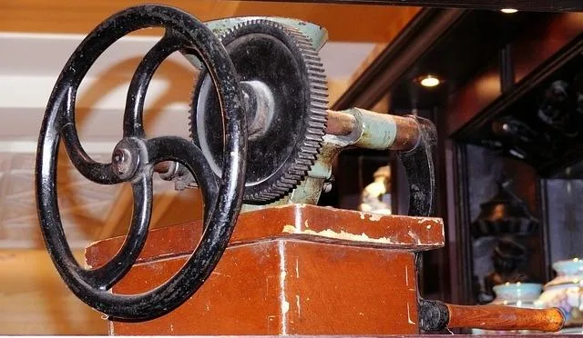

- Only got a backup of
.vdivirtual machine hard disk files? Want to restore them? That's what this page is for. - Want to create a backup of Whonix? See Backup Whonix VMs instead.
- In case you want to use other operating systems behind Whonix-Gateway™, other than the default Whonix-Workstation™, then rather read the Other Operating Systems page.
 Advanced users only!
Advanced users only!
The following instructions are useful, if you have a backup of Whonix
.vdi (or .vdmk) hard disk images but want to
restore them. This could be the case if your VM settings file is damaged
or missing for some reason or if you only made a backup of the
.vdi files.
1. Install Whonix normally.
The easiest is probably to download and import a new Whonix as if getting started with Whonix for the first time.
This is required to get the required Whonix VM settings (which configure important things such as connecting Whonix-Workstation to Whonix-Gateway.
2. Power off the VM.
If not already.
3. Replace the virtual hard disk files.
Note: This step is unspecific to Whonix
In the VirtualBox VMs folder ~/VirtualBox VMs, replace
the original .vdi with the version from your backup.
4. Done.